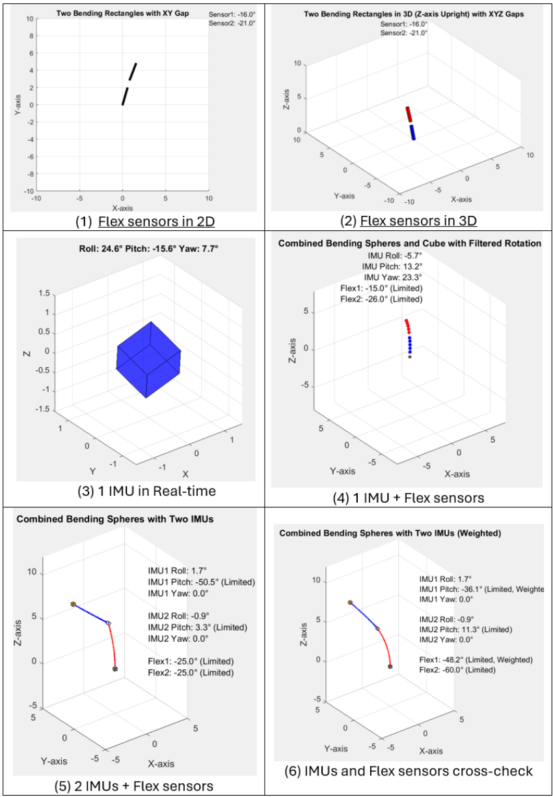
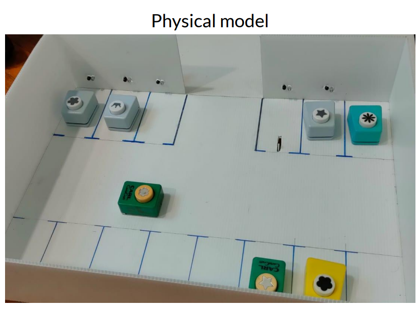

Simulation Projects
High-fidelity digital twins and physics-based environments for robotics testing.
Pick and Place System Simulation
Aug 2025 – Nov 2025Developed a pick-and-place robot system simulation using ABB RobotStudio, incorporating joint motion planning and tool path optimisation to balance precision and efficiency in robotic manipulation tasks.

Real-time Spine Curvature Tracking
Feb 2025 – June 2025Conducted a mini project on real-time spine curvature tracking by selecting and evaluating cost-effective sensing solutions. The final system utilised MPU6050 IMUs and flex sensors for motion and bending measurement, with data acquisition implemented using Arduino and data processing and visualisation carried out in MATLAB for posture and curvature analysis.

Mini Carpark Digital Twin
Jan 2024 - May 2024Developed a smart carpark digital twin using Unity and Arduino, integrating hardware and simulation to replicate real-world parking system behavior in a virtual environment.